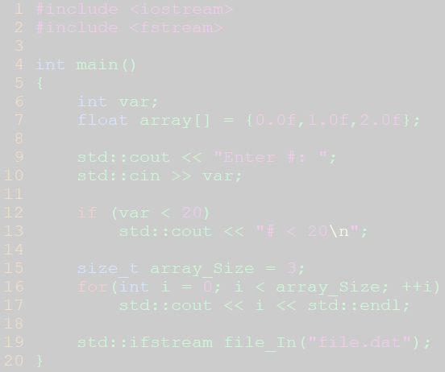

Please keep browser > 575px
CS I
(current)
CS II
CS III
Chat
Login
Kent State's C++ Code Course

Computer Science I
Description Placeholder
CS I Index
Computer Science II
Description Placeholder
CS II Index
Computer Science III
Description Placeholder
CS III Index
Instant Message
Description Placeholder
Instant Messaging Client